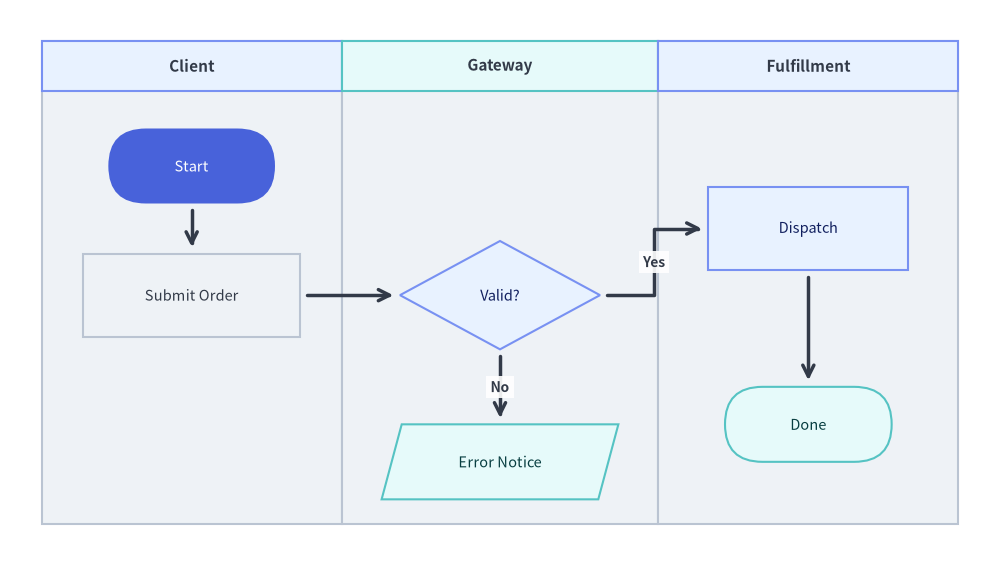

drawlib.diagrams.flow
ISO 5807 / JIS X 0121 flowcharts and cross-functional swimlane workflows with semantic step shapes, decision branches, and orthogonal edge routing. Canonical import: from drawlib.diagrams.flow import Data, Decision, End, FlowDiagram, Process, Start.

Cross-Functional Swimlane Flowchart with Decision Branching
Source Code
from drawlib.canvas import save , setup
from drawlib.diagrams.flow import Data , Decision , End , FlowDiagram , Process , Start
from drawlib.styles import Colors , Styles
setup ( width = 120 , height = 68 )
flow = FlowDiagram (
node_style = Styles . Neutral . patch ( text_size = 10.5 ),
edge_style = Styles . DarkBold ,
edge_text_style = Styles . DarkBold . patch ( text_size = 10.0 ),
width = 110 ,
height = 58 ,
lane_orientation = "vertical" ,
)
flow . add_lane (
"Client" ,
width = 36 ,
style = Styles . Neutral ,
header_style = Styles . PrimaryNeutral ,
text_style = Styles . DarkBold . patch ( text_size = 11.0 ),
)
flow . add_lane (
"Gateway" ,
width = 38 ,
style = Styles . Neutral ,
header_style = Styles . SecondaryNeutral ,
text_style = Styles . DarkBold . patch ( text_size = 11.0 ),
)
flow . add_lane (
"Fulfillment" ,
width = 36 ,
style = Styles . Neutral ,
header_style = Styles . PrimaryNeutral ,
text_style = Styles . DarkBold . patch ( text_size = 11.0 ),
)
start = flow . add (
Start ( "Start" , width = 20 , height = 9 , style = Styles . PrimaryFlat . patch ( text_color = Colors . White , text_size = 10.5 )),
xy = ( 18.0 , 43.0 ),
)
submit = flow . add ( Process ( "Submit Order" , width = 26 , height = 10 ), xy = ( 18.0 , 27.5 ))
check = flow . add (
Decision ( "Valid?" , width = 24 , height = 13 , style = Styles . PrimaryNeutral . patch ( text_size = 10.5 )),
xy = ( 55.0 , 27.5 ),
)
reject = flow . add (
Data ( "Error Notice" , width = 26 , height = 9 , style = Styles . SecondaryNeutral . patch ( text_size = 10.5 )),
xy = ( 55.0 , 7.5 ),
)
ship = flow . add (
Process ( "Dispatch" , width = 24 , height = 10 , style = Styles . PrimaryNeutral . patch ( text_size = 10.5 )),
xy = ( 92.0 , 35.5 ),
)
done = flow . add (
End ( "Done" , width = 20 , height = 9 , style = Styles . SecondaryNeutral . patch ( text_size = 10.5 )),
xy = ( 92.0 , 12.0 ),
)
start . connect ( submit , padding = 0.8 )
submit . connect ( check , padding = 0.8 )
check . connect ( ship , label = "Yes" , start_side = "right" , end_side = "left" , padding = 0.8 )
check . connect ( reject , label = "No" , start_side = "bottom" , end_side = "top" , padding = 0.8 )
ship . connect ( done , padding = 0.8 )
flow . draw ( xy = ( 5.0 , 5.0 ))
save ()
type ArrowType Type alias specifying arrowhead markers on FlowEdge
ArrowType = Literal [ "->" , "<-" , "<->" , "-" ] | str
Coordinate Anchor : Applied to the start and/or end terminals of a FlowEdge
Literal Value
Visual Rendering
Typical Usage
"->"Arrowhead at end
Standard forward control or data flow (default for node targets).
"<-"Arrowhead at start
Reverse directional link.
"<->"Arrowheads at both start and end
Bidirectional synchronization step.
"-"Plain segment without arrowheads
Trunk segment into an intermediate Junction
type Connectable Union type alias representing any flowchart element that can serve as the start or end endpoint of a FlowEdge
Connectable = FlowNode | Junction
Accepted Type
Description
FlowNodeBase flowchart node and all semantic subclasses (Start, End, Process, Decision, Data).
JunctionZero-size waypoint or branch/merge point registered on FlowDiagram
class Data Flowchart I/O node rendered as a slanted parallelogram representing data input, output payloads, or external storage records. Subclass of FlowNode
Data (
text : str = "" ,
width : float = 24.0 ,
height : float = 12.0 ,
style : Style | None = None ,
text_style : Style | None = None ,
show : bool = True ,
) -> None
Coordinate Anchor : Center (cx, cy) when registered via flow.add(node, xy=(cx, cy)).
Constructor Parameters
Parameter
Type
Default
Description
textstr""Label text centered inside the parallelogram (supports \n).
widthfloat24.0Outer bounding width in local diagram units.
heightfloat12.0Outer bounding height in local diagram units.
styleStyle | NoneNoneOptional shape fill, stroke, and text style override (falls back to flow.node_style).
text_styleStyle | NoneNoneOptional typography style override for text.
showboolTrueVisibility flag (False hides this node and attached edges).
Public Methods & Properties
Member
Kind
Signature
Description
bottomproperty-> tuple[float, float]Bottom boundary anchor coordinate.
centerproperty-> tuple[float, float]Center coordinate (x, y) of this node.
connectmethod(self, target: Connectable, label: str = "", arrow: ArrowType | None = None, routing: RoutingType = "orthogonal", start_side: Side = "auto", end_side: Side = "auto", style: Style | None = None, text_style: Style | None = None, padding: PaddingType = 0.0, show: bool = True) -> FlowEdgeConnect this node to target and register a FlowEdge
forkmethod(self, targets: list[Connectable], at_x: float | None = None, at_y: float | None = None, style: Style | None = None, padding: PaddingType = 0.0, show: bool = True) -> list[FlowEdge]Branch from this node to multiple targets via an intermediate Junction
get_anchormethod(self, side: Side = "auto") -> tuple[float, float]Return boundary port coordinate for side ("left", "right", "top", "bottom", "auto").
get_boundsmethod(self) -> tuple[float, float, float, float]Return local bounding box (-width/2, -height/2, width/2, height/2) relative to (0, 0).
leftproperty-> tuple[float, float]Midpoint anchor along the slanted left edge.
rightproperty-> tuple[float, float]Midpoint anchor along the slanted right edge.
topproperty-> tuple[float, float]Top boundary anchor coordinate.
xyproperty-> tuple[float, float]Center coordinate (x, y) relative to the diagram.
class Decision Flowchart conditional branching node rendered as a rhombus (diamond) with four vertex anchors. Subclass of FlowNode
Decision (
text : str = "" ,
width : float = 22.0 ,
height : float = 14.0 ,
style : Style | None = None ,
text_style : Style | None = None ,
show : bool = True ,
) -> None
Coordinate Anchor : Center (cx, cy) when registered via flow.add(node, xy=(cx, cy)). Specify explicit start_side="right" / start_side="bottom" on .connect() calls to separate "Yes" and "No" outgoing branches cleanly.
Constructor Parameters
Parameter
Type
Default
Description
textstr""Condition prompt centered inside the diamond (supports \n).
widthfloat22.0Horizontal tip-to-tip width in local diagram units.
heightfloat14.0Vertical tip-to-tip height in local diagram units.
styleStyle | NoneNoneOptional shape fill, stroke, and text style override (falls back to flow.node_style).
text_styleStyle | NoneNoneOptional typography style override for text.
showboolTrueVisibility flag (False hides this node and attached edges).
Public Methods & Properties
Member
Kind
Signature
Description
bottomproperty-> tuple[float, float]Bottom diamond vertex coordinate.
centerproperty-> tuple[float, float]Center coordinate (x, y) of this node.
connectmethod(self, target: Connectable, label: str = "", arrow: ArrowType | None = None, routing: RoutingType = "orthogonal", start_side: Side = "auto", end_side: Side = "auto", style: Style | None = None, text_style: Style | None = None, padding: PaddingType = 0.0, show: bool = True) -> FlowEdgeConnect this decision node to target and register a FlowEdge
forkmethod(self, targets: list[Connectable], at_x: float | None = None, at_y: float | None = None, style: Style | None = None, padding: PaddingType = 0.0, show: bool = True) -> list[FlowEdge]Branch from this node to multiple targets via an intermediate Junction
get_anchormethod(self, side: Side = "auto") -> tuple[float, float]Return diamond vertex coordinate for side.
get_boundsmethod(self) -> tuple[float, float, float, float]Return local bounding box (-width/2, -height/2, width/2, height/2) relative to (0, 0).
leftproperty-> tuple[float, float]Left diamond vertex coordinate.
rightproperty-> tuple[float, float]Right diamond vertex coordinate.
topproperty-> tuple[float, float]Top diamond vertex coordinate.
xyproperty-> tuple[float, float]Center coordinate (x, y) relative to the diagram.
class End Flowchart terminal exit node rendered as a stadium (pill) shape. Subclass of FlowNode
End (
text : str = "End" ,
width : float = 20.0 ,
height : float = 10.0 ,
style : Style | None = None ,
text_style : Style | None = None ,
show : bool = True ,
) -> None
Coordinate Anchor : Center (cx, cy) when registered via flow.add(node, xy=(cx, cy)).
Constructor Parameters
Parameter
Type
Default
Description
textstr"End"Terminal label text centered inside the pill shape.
widthfloat20.0Stadium bounding width in local diagram units.
heightfloat10.0Stadium bounding height in local diagram units.
styleStyle | NoneNoneOptional shape fill, stroke, and text style override (falls back to flow.node_style).
text_styleStyle | NoneNoneOptional typography style override for text.
showboolTrueVisibility flag (False hides this node and attached edges).
Public Methods & Properties
Member
Kind
Signature
Description
bottomproperty-> tuple[float, float]Bottom boundary anchor coordinate.
centerproperty-> tuple[float, float]Center coordinate (x, y) of this node.
connectmethod(self, target: Connectable, label: str = "", arrow: ArrowType | None = None, routing: RoutingType = "orthogonal", start_side: Side = "auto", end_side: Side = "auto", style: Style | None = None, text_style: Style | None = None, padding: PaddingType = 0.0, show: bool = True) -> FlowEdgeConnect this node to target and register a FlowEdge
forkmethod(self, targets: list[Connectable], at_x: float | None = None, at_y: float | None = None, style: Style | None = None, padding: PaddingType = 0.0, show: bool = True) -> list[FlowEdge]Branch from this node to multiple targets via an intermediate Junction
get_anchormethod(self, side: Side = "auto") -> tuple[float, float]Return boundary port coordinate for side.
get_boundsmethod(self) -> tuple[float, float, float, float]Return local bounding box (-width/2, -height/2, width/2, height/2) relative to (0, 0).
leftproperty-> tuple[float, float]Left curved cap midpoint coordinate.
rightproperty-> tuple[float, float]Right curved cap midpoint coordinate.
topproperty-> tuple[float, float]Top boundary anchor coordinate.
xyproperty-> tuple[float, float]Center coordinate (x, y) relative to the diagram.
class FlowDiagram Top-level container for flowcharts and cross-functional swimlane workflow diagrams. All nodes share a unified global coordinate space across swimlanes.
FlowDiagram (
* ,
node_style : Style ,
edge_style : Style ,
edge_text_style : Style ,
title : str = "" ,
title_style : Style | None = None ,
width : float | None = None ,
height : float | None = None ,
style : Style | None = None ,
lane_orientation : Orientation = "vertical" ,
) -> None
Coordinate Anchor : draw(xy=(0.0, 0.0), align="bottom_left") anchors the diagram's bottom-left (0.0, 0.0) corner at canvas coordinate xy (or centers the diagram at xy when align="center").
Constructor Parameters
Parameter
Type
Default
Description
node_styleStyle(Required) Default fill, border, and text style for flow nodes (keyword-only).
edge_styleStyle(Required) Default stroke and arrowhead style for FlowEdge
edge_text_styleStyle(Required) Default typography style for branch and edge labels (keyword-only).
titlestr""Optional diagram title rendered centered above the diagram.
title_styleStyle | NoneNoneOptional typography style override for title.
widthfloat | NoneNoneOptional explicit diagram width in local units (auto-computed from lanes/nodes if None).
heightfloat | NoneNoneOptional explicit diagram height in local units (auto-computed from lanes/nodes if None).
styleStyle | NoneNoneOptional outer background/border style for the entire flowchart container.
lane_orientationOrientation"vertical"Swimlane layout axis: "vertical" (side-by-side columns) or "horizontal" (stacked rows).
Public Methods & Properties
Member
Kind
Signature
Description
addmethod(self, item: ItemT, xy: tuple[float, float], *, show: bool | None = None) -> ItemTAdd a FlowNodeJunctionxy.
add_edgemethod(self, edge: FlowEdge, *, show: bool | None = None) -> FlowEdgeRegister a pre-constructed FlowEdge
add_lanemethod(self, title: str, size: float | None = None, width: float | None = None, height: float | None = None, style: Style | None = None, text_style: Style | None = None, header_size: float = 6.0, header_style: Style | None = None, show: bool = True) -> LaneAppend a vertical column or horizontal row Lane
connectmethod(self, start: Connectable, end: Connectable, label: str = "", arrow: ArrowType | None = None, routing: RoutingType = "orthogonal", start_side: Side = "auto", end_side: Side = "auto", style: Style | None = None, text_style: Style | None = None, padding: PaddingType = 0.0, show: bool = True) -> FlowEdgeCreate and register a FlowEdgeConnectable
drawmethod(self, xy: tuple[float, float] = (0.0, 0.0), *, align: Literal["bottom_left", "center"] = "bottom_left", scale: PosFloat = 1.0) -> NoneRender the complete flowchart onto the active canvas anchored at xy.
edgesproperty-> list[FlowEdge]Return the list of registered FlowEdge
get_sizemethod(self) -> tuple[float, float]Return the overall (width, height) of the diagram in unscaled local units.
itemsproperty-> list[FlowNode | Junction]Return the list of registered nodes and junctions.
junctionmethod(self, xy: tuple[float, float], *, show: bool = True) -> JunctionCreate and register a Junctionxy.
lanesproperty-> list[Lane]Return the ordered list of Lane
class FlowEdge Connection line linking two ConnectableFlowDiagram
FlowEdge (
start : Connectable ,
end : Connectable ,
label : str = "" ,
arrow : ArrowType | None = None ,
routing : RoutingType = "orthogonal" ,
start_side : Side = "auto" ,
end_side : Side = "auto" ,
style : Style | None = None ,
text_style : Style | None = None ,
padding : PaddingType = 0.0 ,
show : bool = True ,
) -> None
Coordinate Anchor : Attaches to start_side on start and end_side on end; intermediate waypoints use diagram-local (x, y) coordinates.
Constructor Parameters
Parameter
Type
Default
Description
startConnectable(Required) Source FlowNodeJunction
endConnectable(Required) Target FlowNodeJunction
labelstr""Branch condition or transition label rendered along the edge.
arrowArrowType| NoneNoneArrowhead marker (None resolves to "-" when end is a Junction, else "->").
routingRoutingType"orthogonal"Path routing mode ("orthogonal" or "direct").
start_sideSide"auto"Departure port on start ("left", "right", "top", "bottom", "auto").
end_sideSide"auto"Arrival port on end ("left", "right", "top", "bottom", "auto").
styleStyle | NoneNoneOptional line stroke style override (falls back to flow.edge_style).
text_styleStyle | NoneNoneOptional label typography style override (falls back to flow.edge_text_style).
paddingPaddingType0.0Symmetric or (start_pad, end_pad) gap between node borders and line endpoints.
showboolTrueWhether to render this edge.
Public Methods & Properties
Member
Kind
Signature
Description
add_pointmethod(self, xy: tuple[float, float]) -> JunctionAppend waypoint xy to this edge and return a registered Junctionxy for branching.
pointsmethod(self, waypoints: list[tuple[float, float]]) -> FlowEdgeSet explicit intermediate (x, y) waypoints and return self.
viamethod(self, *waypoints: tuple[float, float]) -> FlowEdgeVariadic shorthand for .points(list(waypoints)); returns self.
waypointsproperty-> list[tuple[float, float]]Return a copy of intermediate (x, y) waypoints configured on this edge.
class FlowNode Base vertex class representing any flowchart shape ("process", "decision", "start", "end", or "data"). Concrete subclasses StartEndProcessDecisionDatashape_type and standard dimensions.
FlowNode (
text : str = "" ,
width : float = 24.0 ,
height : float = 12.0 ,
style : Style | None = None ,
text_style : Style | None = None ,
shape_type : ShapeType = "process" ,
show : bool = True ,
) -> None
Coordinate Anchor : Center (cx, cy) when registered via flow.add(node, xy=(cx, cy)).
Constructor Parameters
Parameter
Type
Default
Description
textstr""Label text rendered centered inside the shape (supports \n).
widthfloat24.0Bounding box width in local diagram units.
heightfloat12.0Bounding box height in local diagram units.
styleStyle | NoneNoneOptional shape fill, stroke, and text style override (falls back to flow.node_style).
text_styleStyle | NoneNoneOptional typography style override for text.
shape_typeShapeType"process"Geometric symbol kind ("process", "decision", "start", "end", "data").
showboolTrueVisibility flag (False hides this node and attached edges).
Public Methods & Properties
Member
Kind
Signature
Description
bottomproperty-> tuple[float, float]Bottom boundary anchor coordinate.
centerproperty-> tuple[float, float]Center coordinate (x, y) of this node.
connectmethod(self, target: Connectable, label: str = "", arrow: ArrowType | None = None, routing: RoutingType = "orthogonal", start_side: Side = "auto", end_side: Side = "auto", style: Style | None = None, text_style: Style | None = None, padding: PaddingType = 0.0, show: bool = True) -> FlowEdgeConnect this node to target and register a FlowEdge
forkmethod(self, targets: list[Connectable], at_x: float | None = None, at_y: float | None = None, style: Style | None = None, padding: PaddingType = 0.0, show: bool = True) -> list[FlowEdge]Branch from this node to multiple targets via an intermediate Junction
get_anchormethod(self, side: Side = "auto") -> tuple[float, float]Return boundary port coordinate for side.
get_boundsmethod(self) -> tuple[float, float, float, float]Return local bounding box (-width/2, -height/2, width/2, height/2) relative to (0, 0).
leftproperty-> tuple[float, float]Left boundary anchor coordinate.
rightproperty-> tuple[float, float]Right boundary anchor coordinate.
topproperty-> tuple[float, float]Top boundary anchor coordinate.
xyproperty-> tuple[float, float]Center coordinate (x, y) relative to the diagram.
class Junction Zero-size connectable waypoint and branch/merge node in a FlowDiagram
Junction (
xy : tuple [ float , float ],
* ,
show : bool = True ,
) -> None
Coordinate Anchor : Exact point (x, y) in diagram-local coordinates. Create via flow.junction(xy) or edge.add_point(xy).
Constructor Parameters
Parameter
Type
Default
Description
xytuple[float, float](Required) Diagram-local (x, y) coordinate of the junction.
showboolTrueWhether edges passing through this junction are rendered (keyword-only).
Public Methods & Properties
Member
Kind
Signature
Description
bottomproperty-> tuple[float, float]Bottom anchor coordinate (returns xy).
centerproperty-> tuple[float, float]Center coordinate (returns xy).
connectmethod(self, target: Connectable, label: str = "", arrow: ArrowType | None = None, routing: RoutingType = "orthogonal", start_side: Side = "auto", end_side: Side = "auto", style: Style | None = None, text_style: Style | None = None, padding: PaddingType = 0.0, show: bool = True) -> FlowEdgeConnect this junction to target and register a FlowEdge
get_anchormethod(self, side: Side = "auto") -> tuple[float, float]Return anchor coordinate for side (always returns xy).
get_boundsmethod(self) -> tuple[float, float, float, float]Return zero-area bounding box (0.0, 0.0, 0.0, 0.0).
get_sizemethod(self) -> tuple[float, float]Return zero visual size (0.0, 0.0).
leftproperty-> tuple[float, float]Left anchor coordinate (returns xy).
rightproperty-> tuple[float, float]Right anchor coordinate (returns xy).
topproperty-> tuple[float, float]Top anchor coordinate (returns xy).
xyproperty-> tuple[float, float]Diagram-local (x, y) coordinate of this junction.
class Lane Swimlane column (lane_orientation="vertical") or row (lane_orientation="horizontal") partitioning the background of a FlowDiagramflow.add_lane(...).
Lane (
title : str ,
size : float ,
style : Style | None = None ,
text_style : Style | None = None ,
header_size : float = 6.0 ,
header_style : Style | None = None ,
show : bool = True ,
) -> None
Coordinate Anchor : Automatically tiled sequentially (left-to-right for vertical columns; top-to-bottom for horizontal rows) across the diagram's (0, 0) global frame. For vertical lanes of widths $W_0, W_1, \dots$, column centerlines lie at $X_0 = W_0 / 2$, $X_1 = W_0 + W_1 / 2$, etc.
Constructor Parameters & Attributes
Parameter
Type
Default
Description
titlestr(Required) Actor, team, or subsystem name displayed in the lane header banner.
sizefloat(Required) Primary lane span (width for vertical columns, height for horizontal rows).
styleStyle | NoneNoneOptional background fill and border style for the lane body.
text_styleStyle | NoneNoneOptional typography style override for title.
header_sizefloat6.0Thickness of the header band (height for vertical lanes, width for horizontal lanes).
header_styleStyle | NoneNoneOptional fill/border style override for the header band.
showboolTrueWhether to render this swimlane band.
type Orientation Literal type controlling swimlane stacking direction on FlowDiagram
Orientation = Literal [ "vertical" , "horizontal" ]
Coordinate Anchor : Configures how Lane
Literal Value
Layout Behavior
"vertical"Side-by-side swimlane columns tiled left-to-right with headers at the top (default).
"horizontal"Stacked swimlane rows tiled top-to-bottom with headers along the left edge.
type PaddingType Union type alias specifying endpoint clearance gap distances on FlowEdge
PaddingType = float | tuple [ float , float ]
Coordinate Anchor : Offsets edge endpoints outward from start and end node boundaries.
Form
Meaning
floatSymmetric clearance distance applied equally to both start and end.
tuple[float, float]Asymmetric (start_padding, end_padding) clearance distances.
class Process Flowchart action, task, or operation step rendered as a rectangle. Subclass of FlowNode
Process (
text : str = "" ,
width : float = 24.0 ,
height : float = 12.0 ,
style : Style | None = None ,
text_style : Style | None = None ,
show : bool = True ,
) -> None
Coordinate Anchor : Center (cx, cy) when registered via flow.add(node, xy=(cx, cy)).
Constructor Parameters
Parameter
Type
Default
Description
textstr""Operation label centered inside the rectangle (supports \n).
widthfloat24.0Rectangle width in local diagram units.
heightfloat12.0Rectangle height in local diagram units.
styleStyle | NoneNoneOptional shape fill, stroke, and text style override (falls back to flow.node_style).
text_styleStyle | NoneNoneOptional typography style override for text.
showboolTrueVisibility flag (False hides this node and attached edges).
Public Methods & Properties
Member
Kind
Signature
Description
bottomproperty-> tuple[float, float]Bottom edge midpoint coordinate.
centerproperty-> tuple[float, float]Center coordinate (x, y) of this node.
connectmethod(self, target: Connectable, label: str = "", arrow: ArrowType | None = None, routing: RoutingType = "orthogonal", start_side: Side = "auto", end_side: Side = "auto", style: Style | None = None, text_style: Style | None = None, padding: PaddingType = 0.0, show: bool = True) -> FlowEdgeConnect this process step to target and register a FlowEdge
forkmethod(self, targets: list[Connectable], at_x: float | None = None, at_y: float | None = None, style: Style | None = None, padding: PaddingType = 0.0, show: bool = True) -> list[FlowEdge]Branch from this node to multiple targets via an intermediate Junction
get_anchormethod(self, side: Side = "auto") -> tuple[float, float]Return rectangle side midpoint coordinate for side.
get_boundsmethod(self) -> tuple[float, float, float, float]Return local bounding box (-width/2, -height/2, width/2, height/2) relative to (0, 0).
leftproperty-> tuple[float, float]Left edge midpoint coordinate.
rightproperty-> tuple[float, float]Right edge midpoint coordinate.
topproperty-> tuple[float, float]Top edge midpoint coordinate.
xyproperty-> tuple[float, float]Center coordinate (x, y) relative to the diagram.
type RoutingType Literal type controlling path geometry for FlowEdge
RoutingType = Literal [ "orthogonal" , "direct" ]
Coordinate Anchor : Governs segment interpolation between start and end port coordinates.
Literal Value
Path Geometry
"orthogonal"Right-angled horizontal and vertical Manhattan L/Z segments (default).
"direct"Straight Euclidean line segment between resolved boundary ports.
type ShapeType Literal type selecting the flowchart symbol geometry on FlowNode
ShapeType = Literal [ "process" , "decision" , "start" , "end" , "data" ]
Coordinate Anchor : All shapes are centered around the node's (cx, cy) coordinate.
Literal Value
Rendered Geometry
Convenience Subclass
"process"Rectangle
Process
"decision"Rhombus / Diamond
Decision
"start"Stadium / Pill
Start
"end"Stadium / Pill
End
"data"Slanted Parallelogram
Data
type Side Literal type specifying boundary attachment ports on FlowNode
Side = Literal [ "left" , "right" , "top" , "bottom" , "auto" ]
Coordinate Anchor : Resolves to the midpoint (or vertex on Decision) of the corresponding node side, or selects the nearest facing side automatically when "auto".
class Start Flowchart entry terminal node rendered as a stadium (pill) shape. Subclass of FlowNode
Start (
text : str = "Start" ,
width : float = 20.0 ,
height : float = 10.0 ,
style : Style | None = None ,
text_style : Style | None = None ,
show : bool = True ,
) -> None
Coordinate Anchor : Center (cx, cy) when registered via flow.add(node, xy=(cx, cy)).
Constructor Parameters
Parameter
Type
Default
Description
textstr"Start"Entry terminal label centered inside the pill shape.
widthfloat20.0Stadium bounding width in local diagram units.
heightfloat10.0Stadium bounding height in local diagram units.
styleStyle | NoneNoneOptional shape fill, stroke, and text style override (falls back to flow.node_style).
text_styleStyle | NoneNoneOptional typography style override for text.
showboolTrueVisibility flag (False hides this node and attached edges).
Public Methods & Properties
Member
Kind
Signature
Description
bottomproperty-> tuple[float, float]Bottom boundary anchor coordinate.
centerproperty-> tuple[float, float]Center coordinate (x, y) of this node.
connectmethod(self, target: Connectable, label: str = "", arrow: ArrowType | None = None, routing: RoutingType = "orthogonal", start_side: Side = "auto", end_side: Side = "auto", style: Style | None = None, text_style: Style | None = None, padding: PaddingType = 0.0, show: bool = True) -> FlowEdgeConnect this start node to target and register a FlowEdge
forkmethod(self, targets: list[Connectable], at_x: float | None = None, at_y: float | None = None, style: Style | None = None, padding: PaddingType = 0.0, show: bool = True) -> list[FlowEdge]Branch from this node to multiple targets via an intermediate Junction
get_anchormethod(self, side: Side = "auto") -> tuple[float, float]Return boundary port coordinate for side.
get_boundsmethod(self) -> tuple[float, float, float, float]Return local bounding box (-width/2, -height/2, width/2, height/2) relative to (0, 0).
leftproperty-> tuple[float, float]Left curved cap midpoint coordinate.
rightproperty-> tuple[float, float]Right curved cap midpoint coordinate.
topproperty-> tuple[float, float]Top boundary anchor coordinate.
xyproperty-> tuple[float, float]Center coordinate (x, y) relative to the diagram.